發布時間：2026-05-27 20:32:19
按讚：152 留言：3
Mediterranean brutalism, romanticized. Flowing geometry meets pink concrete. Curved edges and deep voids amidst the solitude of Mediterranean nature. Try it yourself → rendair.ai
產生時間：2026-06-11 01:31:33
帳號數量：8，成功整理貼文數：160
資料來源：instagram-posts-scraper（FaustRen/instagram-posts-scraper）
說明：此頁面彙整每個帳號抓到的最新 20 篇貼文與圖片（若可下載）。
狀態：public
發布時間：2026-05-27 20:32:19
按讚：152 留言：3
Mediterranean brutalism, romanticized. Flowing geometry meets pink concrete. Curved edges and deep voids amidst the solitude of Mediterranean nature. Try it yourself → rendair.ai

發布時間：2026-05-26 22:33:28
按讚：106 留言：0
Floorplans Made This with AI. Real plan-to-visual results created by the Rendair community 👇 1️⃣ Plan to 3D Plan by Justin Glen 2️⃣ Plan to Aerial by Mahmoudm 3️⃣ Plan to Illustration Plan by Omar Lozano 4️⃣ Plan to Axo by Unigradnja Miljkovic 5️⃣ Plan to Rend...
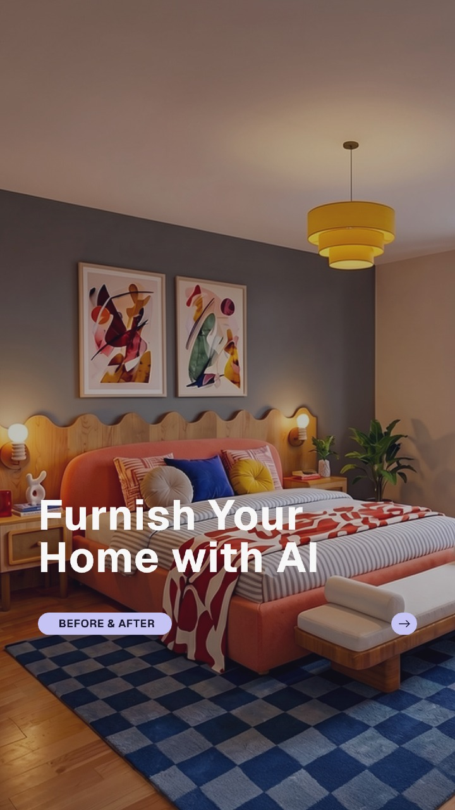
發布時間：2026-05-26 19:59:09
按讚：1,089 留言：5
Apply your dream style to your home! Upload photos of your house to Rendair, describe the style you want, or upload a reference image. See how your chosen style will look while keeping your home exactly the same. Decorate your home in just a few minutes. Try i...

發布時間：2026-05-25 21:10:58
按讚：35 留言：2
5 AI Use Case for Landscape designers. You can now go from a simple photo or sketch → full landscape design → realistic render in minutes. Check out 5 real workflows:from backyard renovations to full urban interventions. Watch the full tutorial from the link o...

發布時間：2026-05-22 22:31:44
按讚：11.3k 留言：43
House in Mexico! Designing a modern Mexican home around a central courtyard, where the house opens inward to light, texture, and everyday life. All images were created with Rendair. You can create images of the same house from different angle, using Rendair AI...
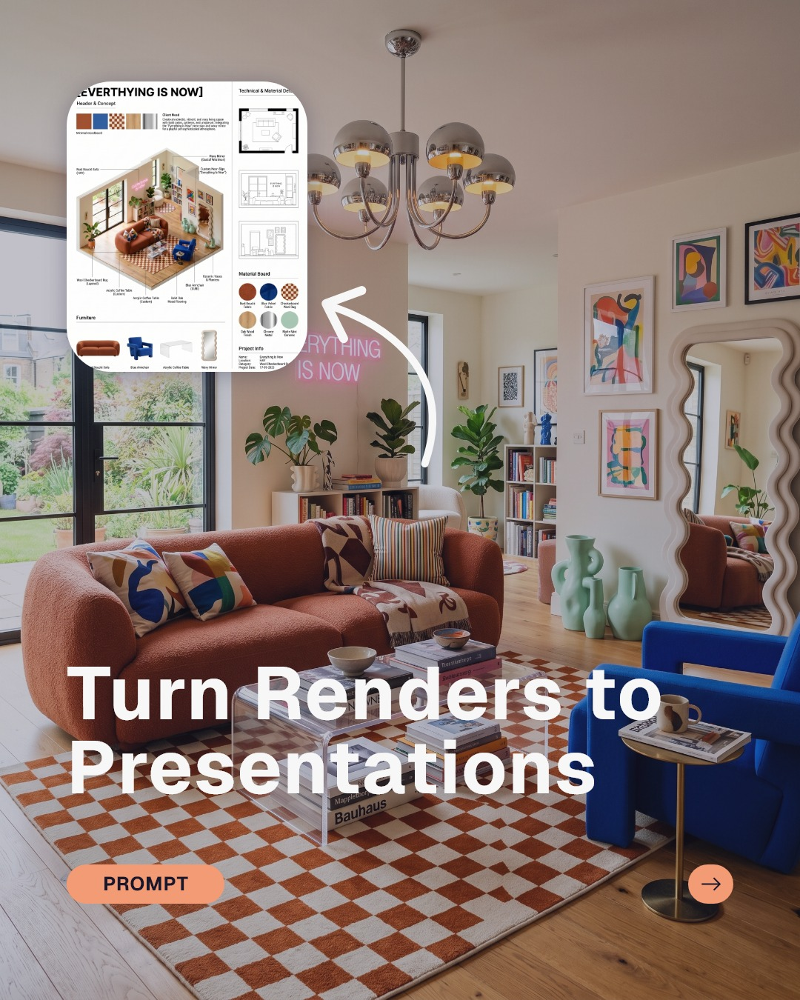
發布時間：2026-05-22 20:33:07
按讚：1,528 留言：33
Turn your renders into a professional interior design presentation board layout with this prompt. You can apply it to any interior space to get a very detailed board. Save this post and use the prompt. Prompt in the first comment. ⬇️ Try it yourself → rendair....

發布時間：2026-05-22 00:06:43
按讚：6,008 留言：26
An oasis of a living complex, constructed with irresistible brickwork. As each apartment becomes a home to a unique life, the entire structure radiates beauty through the enhanced aesthetics of brick. Try it yourself → rendair.ai

發布時間：2026-05-21 18:18:48
按讚：38 留言：1
Create animations from your renders With Rendair AI, you can turn renders into smooth animation scenes and explore a villa from multiple angles. Images created by our user, Sandro Žuljević. Thanks for sharing your results with the community. Try it yourself → ...

發布時間：2026-05-20 20:15:53
按讚：65 留言：0
Enhance Renders by Adding Details Add details to your plain renders! Add Landscaping, People and figures, adjust lighting and create animations! All in minutes. Try it yourself → rendair.ai

發布時間：2026-05-19 23:34:20
按讚：17 留言：2
Start the new series with us: Rendair Bingo! Follow this series where you can get new ideas and inspiration, and where sometimes little tips are shared, and try it out together with us! Today's goal: we are decorating a house with our favorite style. My f...

發布時間：2026-05-19 20:13:48
按讚：73 留言：0
Interior Designers Made This with AI. ✨ Real interior design results created by the Rendair AI community 👇 1️⃣ Nora Sofalvi 2️⃣ Krzysztof Podbielski 3️⃣ Sharon Wong Mee Sing 4️⃣ Gizem Keskin 5️⃣ Olga L From concept exploration to final presentation visuals, in...

發布時間：2026-05-18 23:32:39
按讚：128 留言：0
Do you like bubbles? Or making buildings out of bubbles? It brings a little joy to the city! Try it yourself → rendair.ai
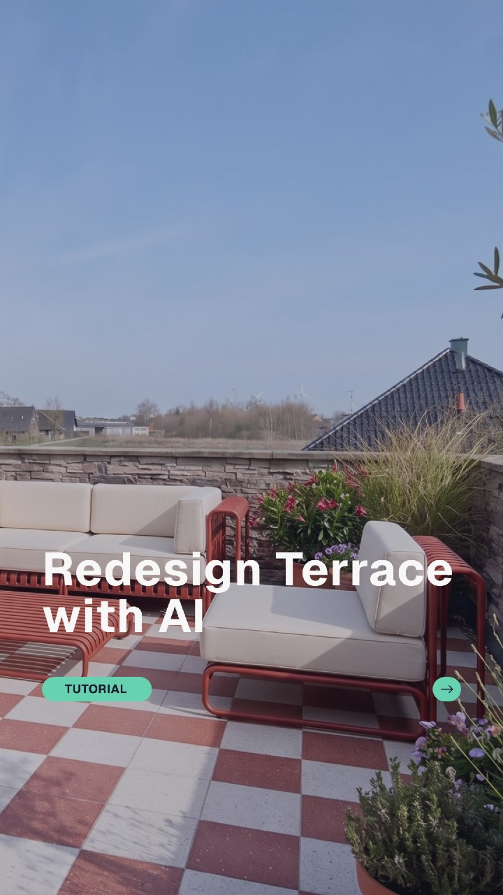
發布時間：2026-05-18 20:10:53
按讚：31 留言：2
Renovating a terrace with real furniture using AI. From a simple space to a fully designed outdoor living area, with materials, layout, and planting, all in minutes. Try it yourself → rendair.ai Watch the full tutorial from the link on the first comment! **Som...

發布時間：2026-05-15 21:39:53
按讚：2,392 留言：16
A workflow created entirely with Rendair. Generate an isometric diagram, render it. Get a detailed view of any spot you want and create a product diagram. Turn on the lights and invite your cat to this cozy atmosphere! Try it yourself → rendair.ai

發布時間：2026-05-14 22:05:24
按讚：29 留言：3
We’ve reimagined Tarot cards through an architectural perspective! By blending Gothic and Parametric design, we’ve reinterpreted the Tarot. Push the boundaries of creative production with Rendair. Try it yourself → rendair.ai

發布時間：2026-05-14 20:35:13
按讚：28 留言：0
Design is often just iteration. One empty under-stair space. Multiple functional programs. → Reading nook → Workspace → Storage + pet zone → Indoor greenery → Kids’ corner → Feature installation Instead of imagining every option manually, explore them instantl...

發布時間：2026-05-13 22:32:12
按讚：73 留言：0
Tired of using the same materials in your architectural visuals? One of the best secrets to creating "cool" architectural visuals is using interesting facade materials. Swipe to see my 5 favorites! Save and use these material prompts in your own desi...

發布時間：2026-05-13 00:32:04
按讚：1,591 留言：11
Exploring form and innovative materials... Colored glass rods merging with a wavy facade. Let’s bring some color to the street! Try it yourself → rendair.ai

發布時間：2026-05-11 21:40:42
按讚：77 留言：1
Renovating a backyard with AI. From an empty outdoor space to a fully designed garden with a pool, seating, and planting—all in minutes. Try it yourself → rendair.ai Watch the full tutorial from the link on the first comment! **Some reference and base images a...

發布時間：2026-05-08 21:00:50
按讚：47 留言：4
Turn your models into isometric renders and tell your story with just a few prompts. Try it yourself → rendair.ai Watch the full tutorial from the link on the first comment!
狀態：public

發布時間：2025-10-29 15:05:55
按讚：584 留言：868
D5極速素材庫 終於上架啦 任意留言送你免費d5模型 - 不小心走火入魔做了超過1300個d5傢俱模型 保證常見款式 且超夠用 後續每月更新材質庫 直到更新完所有類別 立即恢復原價 並附上約6篇材質模型小技巧教學影片 除了素材以外 還能學習到如何自製模型庫 如何自製多通道材質貼圖等等 希望讓大家能花更少的時間畫出更美的圖 就能有更多空檔去休息 去做自己想做的事 希望讓大家畫圖越來越方便🙌🏻

發布時間：2025-10-23 14:10:55
按讚：1,148 留言：1,877
#sketchup 必備外掛特輯又來了 這次是圓角神器 bevel! 是我使用率最高的一款工具 用在曲面天花 圓弧牆 座椅 都超直覺好用 下方任意留言 就送你這個bevel外掛試用檔 - 我也有sketchup高效曲面建模課 歡迎點選主頁連結 有免費課程試看喔！

發布時間：2025-09-25 13:37:48
按讚：577 留言：12
2025室內設計好用免費材質網 1.CC0 Tecture 2.Share Textures 3.Ambient CG 4.Poliigon 5.CGbookcase 6.TextureCan

發布時間：2025-08-21 15:32:01
按讚：2,804 留言：1,003
以下開放任意讚美我的工作空間 就送你10個辦公設備3D模型 - 以前都是幫別人畫出他們的夢想辦公室 接案6年我終於也有自己的小工作空間啦 這次以工作名義買了這些酷東西： 1. MOTTI Kiin升降桌 <a href="/profile/motti.tw/">@motti.tw</a> 2.MOTTI Vertti人體工學椅 <a href="/profile/motti.tw/">@motti.tw</a> 3.cybe...

發布時間：2025-07-31 16:39:48
按讚：449 留言：240
超久沒發圖文 教你如何用 #d5render 做野口勇的紙燈燈罩效果 主要在布藝模板 他有個很棒的功能是可以做半透明的布料 接著搭配法線貼圖給一張布紋 再放入點光源就好啦🙌🏻🙌🏻 隨便留言我送你紙燈模型跟法線貼圖 馬上就可以練習看看 - 更多D5教學 歡迎點擊主頁連結瞭解更多

發布時間：2025-07-30 15:38:14
按讚：1,014 留言：1,665
#sketchup 超萬能的材質替換外掛 搭配材質的時候不用再一個個點進去重新上色啦 使用這個超佛的免費外掛就能一秒替換材質 Material replacer 一樣隨意留言 就傳這個超好用工具rbz檔案給你 - Sketchup高效曲面建模課 點擊主頁連結 觀看課程免費試看片段 db3drender.com

發布時間：2025-07-17 15:35:20
按讚：1,672 留言：2,242
（任意留言又來送東西惹） 這款2D轉3D的工具到底值不值得克金 沒錯 我直接買了會員給大家實測💸🥹 當你今天找不到客戶指定奇怪款式傢俱 Suapp外掛能直接把圖片轉3D skp模型 但實測下來 建議一定要一體成型的傢俱會是比較好的 他也會自動生成一個照片貼圖貼上去 但我建議都還是再去渲染器上色材質效果更真實 （但如果是比較多複合式材料的傢俱就不太適合） Ai渲染功能 也都能後置調整並局部替換傢俱 正確設定後也能符合sketchup的模型形體不變形 - 在下方任意留言 我就送你我使用這款suapp生成的10個傢俱sk...

發布時間：2025-06-26 15:13:30
按讚：4,050 留言：2,740
#d5render 曲線燈帶是困擾最多人 也很多人詢問的 我不會再讓你一個個手動去旋轉排列那麼累了 我發現這個超好用的外掛工具 D5輔助工具箱 直接一秒照著你的線條排出燈帶 還能同步到d5視窗中！ - 下方任意留言 我馬上送給你這個好用工具外掛檔案

發布時間：2025-06-19 15:14:16
按讚：901 留言：6
#sketchup 一秒生成樓梯外掛 只要有樓梯的平面圖 都能一鍵enter幫你把所有樓梯踏步做出來 就連曲線車道 斜坡都可以做到 - S4u make stair plugin - [sketchup高效曲面建模課］破600人購買 點選主頁瞭解更多 db3drender.com

發布時間：2025-03-27 16:51:39
按讚：639 留言：20
#sketchup 每次建模要用實心工具的時候 是不是一直跳出超討厭的視窗 說你的東西不是實體 快把你逼瘋 這時候 solid solver這個外掛 超簡單暴力 一秒解決 趕快裝起來 - 我是帶筆 立志成為設計師的3D工具人 D5超寫實渲染課 sketchup曲面建模 enscape電影級渲染 等等線上課程 歡迎有興趣點進課程官網瞭解更多喔！

發布時間：2025-03-08 17:24:50
按讚：236 留言：4
D5 Render 2.10超強更新 - 1.實時路徑追蹤 陰影加重 玻璃 反射材質更準確 材質紋理更細緻明顯 2.優化天氣系統 能做出大雨水霧 颱風天效果 3.自定義白天夜晚環境 增加月亮 銀河 星空背景 4.ai圖像後期 自帶動態模糊 直接免修圖 局部重繪功能 可以一秒替換 天空 人物 植物 水面 - D5超寫實室內外課程 db3drender.com 開賣一週就破600位啦 這麼帥又好玩的渲染器 必須學起來 <a href="/profile/d5renderofficial/"&g...

發布時間：2025-02-21 16:00:48
按讚：717 留言：5
教你D5的攝影級構圖大法！ - 1.三分法構圖 D5右上角顯示-開啟構圖線 將畫面分成 橫向 縱向各劃分3等分 主角 重點物件（如單椅 沙發 面盆 花瓶） 放在這些線的交點上 使畫面有視覺引導 2.上帝視角構圖法 D5中切換到 透視視圖 緊貼天花板往下看畫面主角 並同時符合三分法交點原則 - 3.前景遮擋 在前方加入模糊的物件 讓視線自然聚焦到主體 創造景深。 模擬躲在後方的「偷窺感」 遮擋物都不超過1/3範圍 - 4.引導線構圖 利用 地板紋理、立面邊緣、天花板線條 將視線引導至畫面重點 地磚分割線 或 燈帶 可...

發布時間：2025-01-27 16:17:52
按讚：387 留言：4
Bangkok mahanakhon building 曼谷像素大廈 - Modeling software: <a href="/profile/sketchup_official/">@sketchup_official</a> Rendering software: <a href="/profile/d5renderofficial/">@d5renderofficial</a> 建築渲染也必須學起來！ #sketc...

發布時間：2025-01-16 12:48:43
按讚：487 留言：14
如果倫敦貝果店開在台灣的話 應該會長這樣 If London Bagel museum asked me to design their store in Taipei…… 嘗試做出台灣的街景 電線桿、路燈、臨停的機車、紅線的馬路 還有偷偷放了一個打掃的車車 Modeling software: <a href="/profile/sketchup_official/">@sketchup_official</a> Rendering software: <a h...

發布時間：2025-01-14 17:57:33
按讚：524 留言：20
Ader error店面3D設計 去年底去首爾獨旅 非常佩服ader error的店面設計 頹廢大膽再加上宇宙元素 所就想說自己來畫一間我心目中的分店 - 這間做成教材會不會學習意願提升🤣 - If Ader error asked me to design their store… #sketchup3d #d5render #renderbox #renderbook

發布時間：2025-01-07 14:09:33
按讚：721 留言：18
木質侘寂住家設計 已經很久沒畫到那麼喜歡的案子了 Design + rendering: <a href="/profile/db3d.render/">@db3d.render</a> Modeling software: <a href="/profile/sketchup_official/">@sketchup_official</a> Rendering software : <a href="/p...

發布時間：2024-12-30 16:02:08
按讚：1,181 留言：7
#ai 設計師2025年必須玩過的強化渲染圖AI工具 1.krea ai Enhancer用來增強你的渲染圖質感 布料皺摺 或是光影材質不滿意的地方 都能讓你的圖大升級 2.Hailuo ai 讓你渲染圖直接動起來的ai網站 根據你的指令會生成出意想不到的動畫成果 也可以參考官網首頁的指令 貼在你的圖上生成 加入人、動物的效果最好 還很適合生成迷因 - #sketchup #aiart #ai工具 #3d #室內設計 #室內設計裝潢 #室內設計師

發布時間：2024-12-27 20:22:01
按讚：408 留言：7
密閉微水泥浴室3D設計 Modeling software : <a href="/profile/sketchup_official/">@sketchup_official</a> Rendering software : <a href="/profile/d5renderofficial/">@d5renderofficial</a> 你們開始玩d5了嗎

發布時間：2024-11-06 14:11:01
按讚：660 留言：5
Enscape必備外掛神器！ 智達雲是款我用了很久的外掛集合器 1.能打包整個ens模型 更換設備 電腦路徑 不丟失參數 貼圖 用任何設定 2.超好用資產庫 我的enscape材質包就是使用這個功能 能保存所有凹凸法線反射貼圖 同時 你雜亂的skp模型也能直接導入 資產庫讀取模型也快速並自動生成預覽圖 畫圖更高效 3.常見外掛簡易版 有時候外掛到期或是出現bug不能使用 直接在智達雲搜尋 馬上能找到相對應的功能 使用方式都跟原本一樣 - Enscape超好用700組材質包 請點選主頁連結 db3drender.co...

發布時間：2024-10-01 00:29:05
按讚：308 留言：12
暗黑石紋臥室 這堂案例要放進教材嗎 - #sketchup #d5render
狀態：public

發布時間：2026-06-01 14:41:25
按讚：9 留言：0
From Crayon Doodles to Reality! 🎈🖍️ At AIRILab, we believe every masterpiece begins with a simple, uninhibited thought. We're honoring the limitless imagination of kids by bringing their doodles to life. Watch the transformation in the video as we turn cr...

發布時間：2026-05-31 12:00:00
按讚：1,391 留言：26
What if we cared? But what if we don’t? 🌍💔 The gap between the ”What Is“ and the ”What Could Be“ isn‘t a lack of technology—it’s a lack of intention. At AIRILab, we use AI to visualize the potential of our urban environments. We see the clear, green, thriving ...

發布時間：2026-05-30 12:50:00
按讚：935 留言：6
Where technical precision meets creative freedom. ☕️✨ Design isn‘t just about the final render—it’s about the narrative of the structure. We‘re exploring the potential of ”AIRI Cafe“ through a series of hybrid concepts, blending raw architectural sketches with...
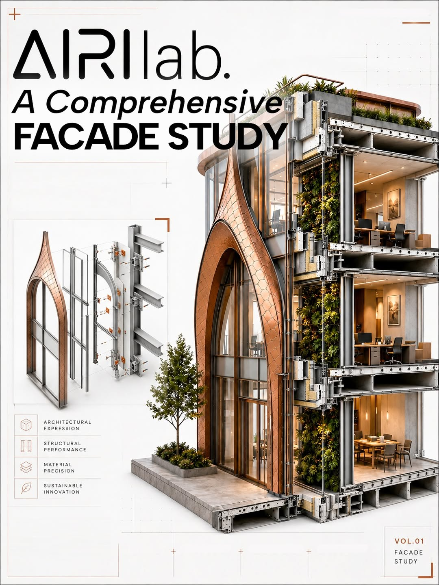
發布時間：2026-05-29 11:14:45
按讚：151 留言：2
Beyond the render: The science behind the facade. 🏛️🔍 Presenting Vol. 01 of our Comprehensive Facade Study. At AIRILab, we believe design is a rigorous balance of aesthetics, structural performance, and environmental responsibility. We're moving beyond ju...

發布時間：2026-05-28 10:36:14
按讚：108 留言：1
From aging facade to modern cafe in just a few clicks. ☕️✨ Renovation doesn't have to start with a sledgehammer. At AIRILab, we're using AI to reimagine the potential of existing spaces before construction begins. In our latest tutorial, we walk you ...

發布時間：2026-05-27 17:05:24
按讚：307 留言：0
Celebrating World Otter Day with a touch of biomimetic genius. 🦦🏗️ They aren't just masters of the water; they're masters of form. In honor of World Otter Day, we're revisiting some of our favorite architectural concepts inspired by our furry fr...

發布時間：2026-05-27 10:39:00
按讚：70 留言：0
Redefining the retail experience, one facade at a time. 🏗️✨ The high street is evolving. From the fluid, organic curves of luxury boutiques to bio-integrated urban interventions, we are pushing the boundaries of what a facade can be. At AIRILab, we believe tha...

發布時間：2026-05-26 10:29:06
按讚：32 留言：1
One building, infinite potential. 🏙️✨ "Reimagine. Redesign. Renew." Adaptive reuse is the most sustainable path forward for our cityscapes. At AIRILab, we're utilizing AI to explore the possibilities of aging infrastructure before a single brick...
發布時間：2026-05-25 10:22:15
按讚：122 留言：1
From SketchUp to photorealism in seconds. ⚡️ The AIRILab workflow. #airilab #aiarchitecture #sketchup #rendering #archviz #designworkflow

發布時間：2026-05-23 20:45:00
按讚：551 留言：5
#airilab #aiarchitecture #architecturedesign #zahahadid #tadaoando #lecorbusier #architecturalrendering #designinspiration #archdaily #aiartcommunity
發布時間：2026-05-23 10:00:00
按讚：4,308 留言：40
Which architectural master guides your creative vision? 🏛️✨ At AIRILab, we believe that innovation in AI design starts with a deep appreciation for the pioneers of space. From Zaha Hadid’s fluid dynamism to Tadao Ando‘s mastery of light, and Mies van der Rohe’...
發布時間：2026-05-22 10:10:22
按讚：4,293 留言：15
A single, continuous gesture weaving through the city. 🔴✨ Introducing "The Red Ribbon" — a conceptual urban vision created with AIRILab. We set out to challenge the fragmentation of modern waterfronts by introducing a singular, fluid architectural ge...
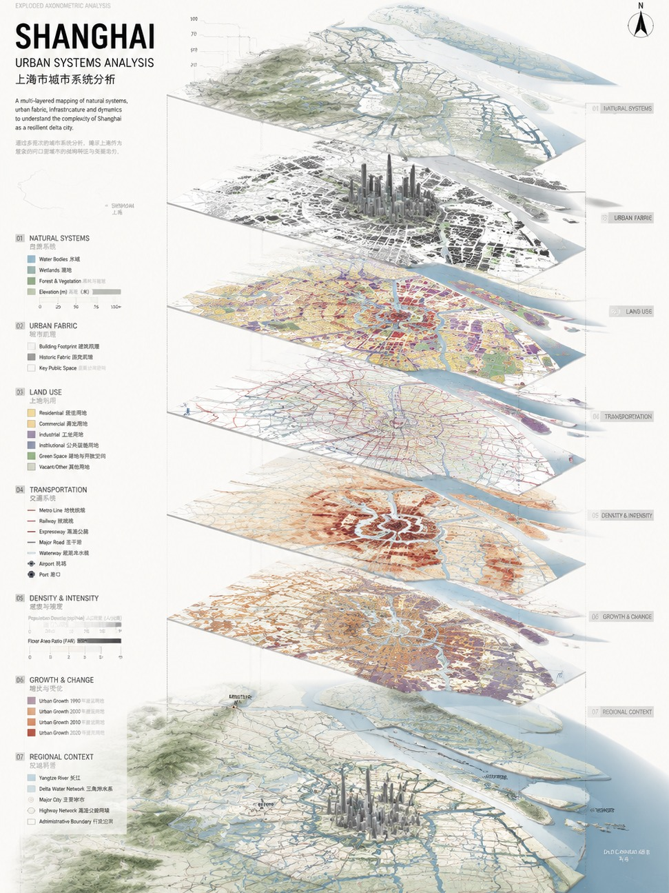
發布時間：2026-05-21 10:38:02
按讚：544 留言：3
The beauty of urban planning lies in the details. This exploded axonometric site analysis is a testament to how we can break down complex data into legible, visual narratives. By separating layers like land use, infrastructure, and urban growth, we gain a 360-...

發布時間：2026-05-20 10:37:14
按讚：740 留言：16
From Satellite to Masterplan Diagram. 🌍📐 Creating museum-quality urban planning diagrams usually requires hours of GIS data processing, AutoCAD drafting, and Illustrator refinement. With AIRILab, you can generate architectural competition-ready masterplans wit...

發布時間：2026-05-19 10:14:42
按讚：1,176 留言：31
Urban planning is complex, and a single render rarely tells the whole story. To fully communicate a city district's potential, you need multiple layers of visualization. Swipe through to explore the 6 essential presentation styles every urban designer nee...

發布時間：2026-05-18 10:10:37
按讚：66 留言：2
From satellite view to master plan in seconds. 🌍✨ Watch the magic of efficient urban analysis. At AIRILab, we're bridging the gap between raw geographical data and professional site diagrams using AI. No more tedious tracing. Just input, analyze, and iter...

發布時間：2026-05-17 18:00:00
按讚：164 留言：0
Minimalist City Maps in Seconds. 🌍✨ From the winding Thames in London to the bustling grids of Shanghai, there is a unique beauty in the urban fabric. 🗺️ We generated this series of minimalist, gallery-worthy cartographic posters (London, Paris, Shanghai, Sing...

發布時間：2026-05-16 18:00:00
按讚：1,587 留言：16
Creating museum-quality urban planning diagrams usually requires hours of GIS data processing, AutoCAD drafting, and Illustrator refinement. With AIRILab, you can generate architectural competition-ready masterplans with precise urban morphology and clean vect...

發布時間：2026-05-15 10:12:09
按讚：2,014 留言：5
Who says structural elements can't be the star of the show? Explore the beauty of complex architectural geometry with these striking timber roof concepts. From sweeping parametric wood slats to intricate, interlocking timber matrices contrasting against m...
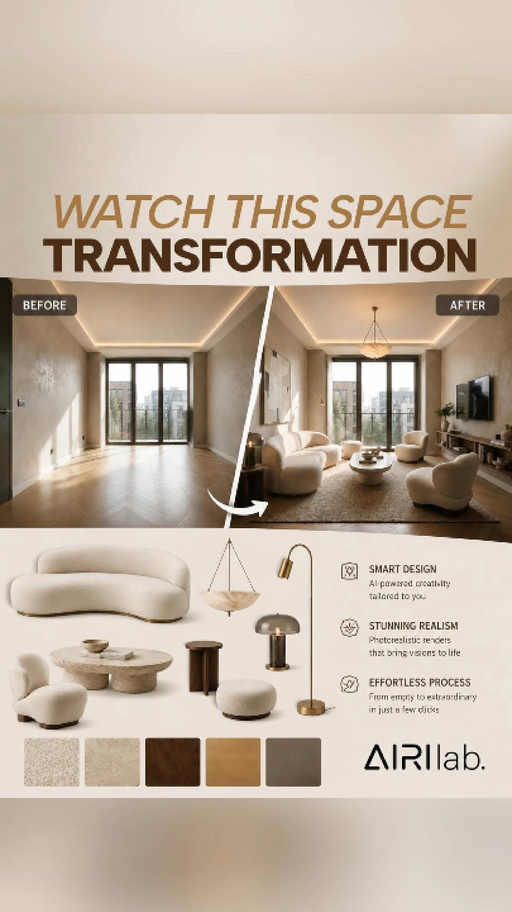
發布時間：2026-05-14 11:17:35
按讚：45 留言：0
Transforming an empty space into a fully curated living room has never been this effortless. With AIRILab, your virtual staging process takes just a few clicks. Simply upload a photo of your empty room along with a collage of your favorite furniture pieces and...
狀態：public
發布時間：2025-08-19 21:45:03
按讚：2,242 留言：24
Funicular Sky Bar . #parametricarchitecture #parametricdesign #parametric #structure #architecture #skybar #luxury #hotel #suite #timfu #studiotimfu #design #wow
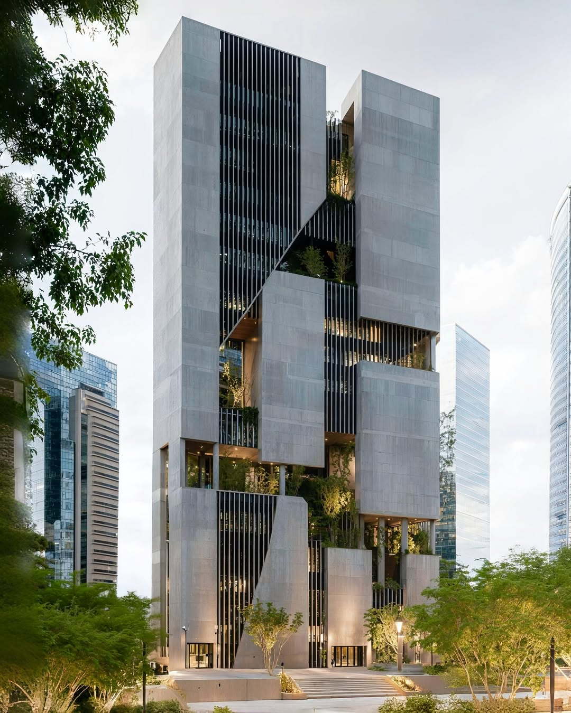
發布時間：2025-08-16 20:24:48
按讚：2,495 留言：28
The Monument Residence Can brutalist façades and playful geometric strategies replace the tradition of repetitive windows? #studiotimfu #timfu #architecture #design #rationaldesign #monument #brutalism #luxuryresidence #luxury #luxuryliving
發布時間：2025-08-14 21:38:32
按讚：1,367 留言：22
We are hiring again! (STF Visuals) Want to join a small, concentrated team of top-tier talent? STF Visuals is expanding again, and we’re looking for the best to help shape high-profile projects for leading global clients. Our work blends human creativity with ...
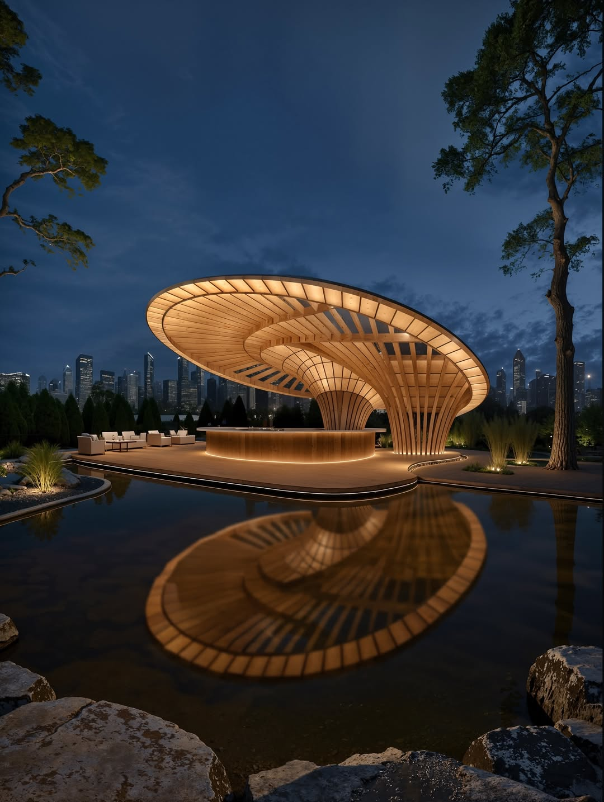
發布時間：2025-08-10 20:07:22
按讚：4,520 留言：33
Canopy Lounge . #design #architecture #pavilion #parametric #structure #parametricarchitecture #timfu #studiotimfu

發布時間：2025-07-30 20:24:41
按讚：9,136 留言：75
Celestial Coast Development . Serene luxury resort district inspired by the spectacles of celestial bodies. . #stars #astronomy #galaxy #architecture #urbanism #resort #paradise #luxury #luxuryliving #studiotimfu
發布時間：2025-07-25 21:28:12
按讚：1,007 留言：7
Divine Dubai . A land of diverse architectural experiences, where culture meets future visions. . #dubai #uae #architecture #parametricarchitecture #parametric #timfu #studiotimfu

發布時間：2025-07-21 19:29:54
按讚：974 留言：12
Behind the Vision: From 3D to AI A look inside our pioneering process for LA28 Olympic Village. From modelling to renderings, two London studios fuse together human design and artificial intelligence. Teams: Mind Design <a href="/profile/miroslavmn/&qu...

發布時間：2025-07-17 22:43:27
按讚：7,866 留言：31
Vernacular Impressions . . A visual journey into cultural impressionism, exploring heritage through layered cityscapes that blend global architectural motifs. Human figures animate each scene, turning memory and tradition into a living, theatrical backdrop. . ...

發布時間：2025-07-10 23:00:18
按讚：455 留言：4
Team 2025: Architects of the future. Forged in international AI competitions and hiring hackathons, our team stands at the cutting edge. With elite minds, we’re advancing the next frontier of AI-driven architecture. #studiotimfu #timfu

發布時間：2025-07-09 16:06:58
按讚：523 留言：8
Team 2025: Architects of the future. Forged in international AI competitions and hiring hackathons, our team stands at the cutting edge. With elite minds, we’re advancing the next frontier of AI-driven architecture. #studiotimfu #timfu

發布時間：2025-07-09 03:06:01
按讚：999 留言：8
Team 2025: Architects of the future. . Forged in international AI competitions and hiring hackathons, our team stands at the cutting edge. With elite minds, we’re advancing the next frontier of AI-driven architecture. . #studiotimfu

發布時間：2025-07-08 02:40:35
按讚：20.4k 留言：145
Suspended Experiences . . . #timfu #studiotimfu #aiarchitecture #ai #architecture #luxury #luxuryinterior #parametricarchitecture #futuristic #architecturephotography #visualization #architecturevisuals #arquitectura
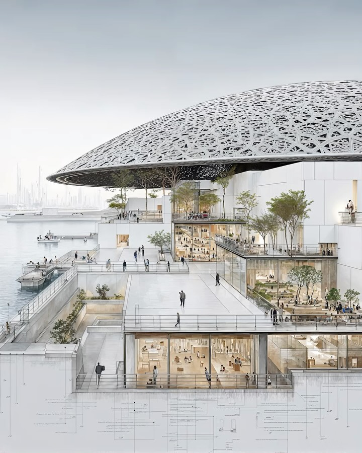
發布時間：2025-06-24 16:26:36
按讚：15.8k 留言：99
Living Sketches – Landmarks in the Emirates Architectural storytelling rooted in the UAE’s bold urban identity: where sweeping curves, crystalline towers, and futuristic forms emerge from the desert. Each visual captures the choreography of progress, drawing a...

發布時間：2025-06-20 21:37:22
按讚：16.6k 留言：96
Living Sketches – London Landmarks Architectural storytelling inspired by London’s layered identity: from gothic spires and Georgian rhythms to brutalist geometry and postmodern contrasts. Each visual reimagines the city’s fabric through a sketch, a pulse, a c...
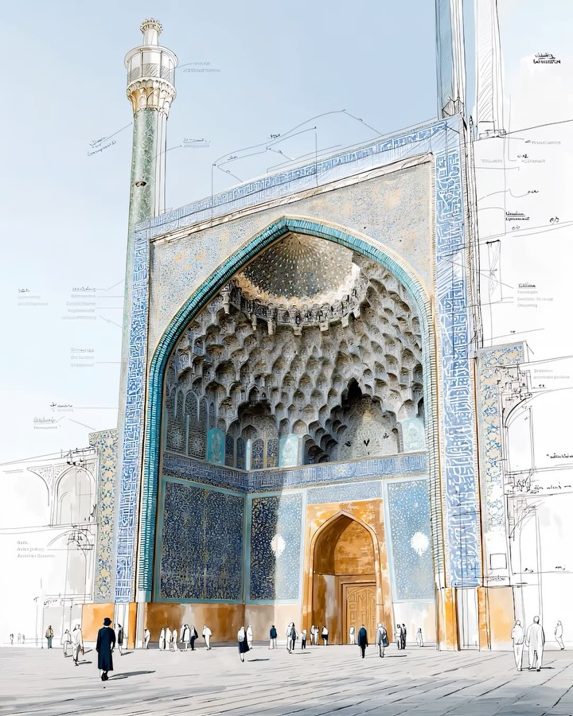
發布時間：2025-06-08 18:35:56
按讚：22.8k 留言：220
Living Sketches – Iranian Monuments Architectural storytelling inspired by Persian architecture: from windcatchers and muqarnas to monumental thresholds. Each visual reinterprets tradition through a sketch, a movement, a memory Published by STF Visuals #sketch...

發布時間：2025-06-05 16:00:00
按讚：16.5k 留言：129
All modelled with AI from students with zero coding knowledge! This is the power of AI! Amazing parametric architecture from participants of our 4-day workshop, Parametric Intelligence 2.0! All projects are: -conceived with AI -modelled with AI -materialized w...
發布時間：2025-05-30 20:19:01
按讚：10.5k 留言：66
Living Sketches Pioneering new storytelling strategies through AI-integrated visualisation. We specialise in architecture, masterplanning and experience design, with AI to enable expedited delivery. Published by STF Visuals #sketch #art #timfu #studiotimfu #ai...
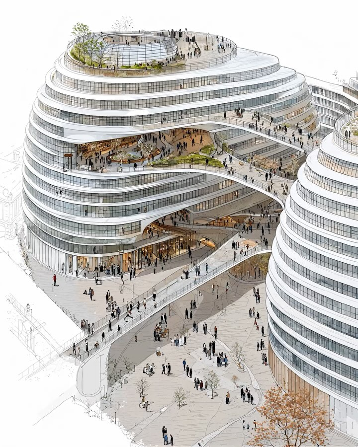
發布時間：2025-05-29 21:48:33
按讚：44.9k 留言：156
Living Sketches – Icons New ways of architectural storytelling—blending atmosphere, narrative, and spatial experience. From hyper-realism to abstract representations, each visual strategy tells a story and a vision Published by STF Visuals #sketch #art #timfu ...

發布時間：2025-05-27 20:15:25
按讚：2,806 留言：21
Vernacular Futurism . . . #timfu #studiotimfu #aiarchitecture #ai #architecture #luxury #luxuryinterior #parametricarchitecture #futuristic #interior #architecturephotography #interiordesign #arquitectura
發布時間：2025-05-22 20:33:33
按讚：6,675 留言：29
Living Sketches is a glimpse into the explorations at STF Visuals, our in-house render studio. Through an AI-integrated workflow, we investigate alternative modes of architectural representation, foregrounding atmosphere, narrative structure, and spatial exper...
狀態：public

發布時間：2026-04-12 13:28:46
按讚：468 留言：135
Comment 'Model' for the access link and full video 📹 Exploring a workflow where a simple concept sketch transforms into a 3D model. 🏢 The idea? To move beyond just 2D and start designing, visualising, and testing directly in 3D. Place your model on t...
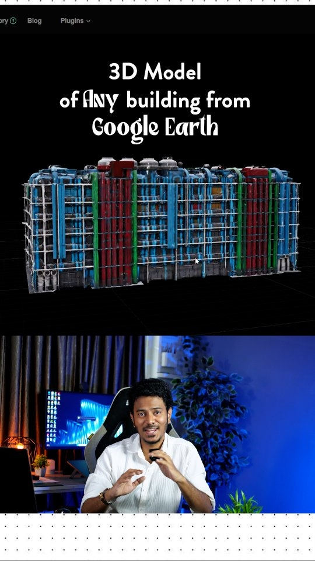
發布時間：2026-03-28 21:37:27
按讚：2,220 留言：998
Comment 'Model' for the access link, prompts and a detailed video 📹 The best results don’t come from a single tool, they come from combining workflows intelligently. In this experiment, we extracted multiple elevations of the Centre Pompidou and fed ...

發布時間：2026-03-24 22:15:56
按讚： 留言：107
Comment “Model” to try it out now! 🪑 I’ve been experimenting with AI Image → 3D tools lately, and this one was created using Hitem3D. Honestly, didn’t expect it to turn out this usable. We’ve shared a full breakdown on YouTube where I test it across different ...

發布時間：2026-03-10 21:28:27
按讚：777 留言：388
Comment 'Render' for the download link and full tutorial 🔑 If you're wondering which render tool to pick this year, without any complicated setups or learning curve, D5 might be the ideal choice. And in the latest version 3.0, they've integ...
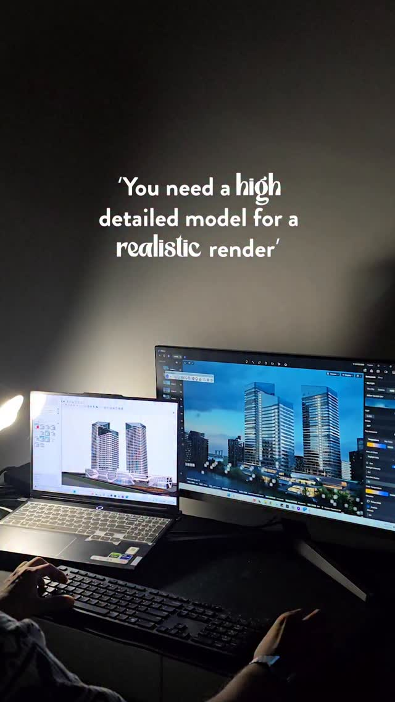
發布時間：2026-03-01 22:09:18
按讚： 留言：158
Comment 'Render' for full tutorial and free download link to D5 🤯🔥 This project is part of our D5 3.0 review on YouTube. The new features on D5 are on another level, an intersection of traditional visualisation workflow and practical integration of A...

發布時間：2026-02-28 22:41:02
按讚： 留言：229
Comment 'Nano' to watch the full review of the new version Nano Banana 2 🤯 This new update brings Pro-level intelligence with Flash-level speed — which basically means faster iterations, cleaner text inside images (finally!), and much better visual c...
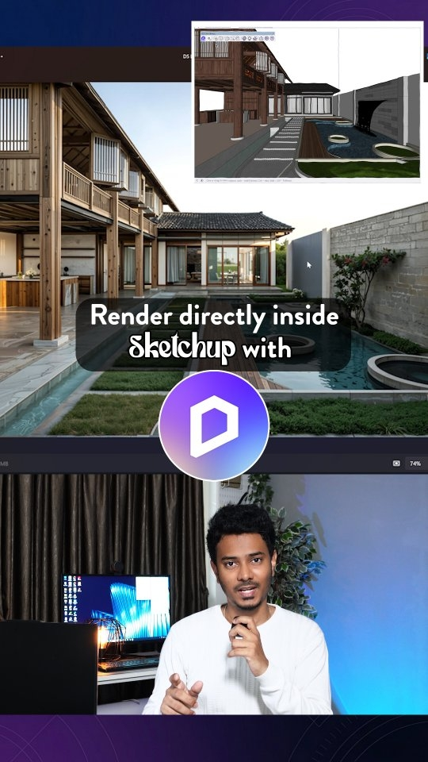
發布時間：2026-02-10 21:58:44
按讚：552 留言：161
Comment 'D5' for the full tutorial and access link 📹 The latest version of D5 3.0 comes with a game changing plugin called D5 Lite. This allows users to render a Sketchup scene directly within the modelling software without even opening D5 Render 🤯 Y...
發布時間：2026-02-03 22:00:09
按讚：697 留言：186
Comment 'Render' to watch the full process and access link 📹 Walkthroughs created in D5 Render 3.0 for our full YouTube tutorial. 🚀 Hyper-realistic renders and smooth walkthroughs are now insanely easy to achieve, even if you’re a beginner. D5 3.0’s ...
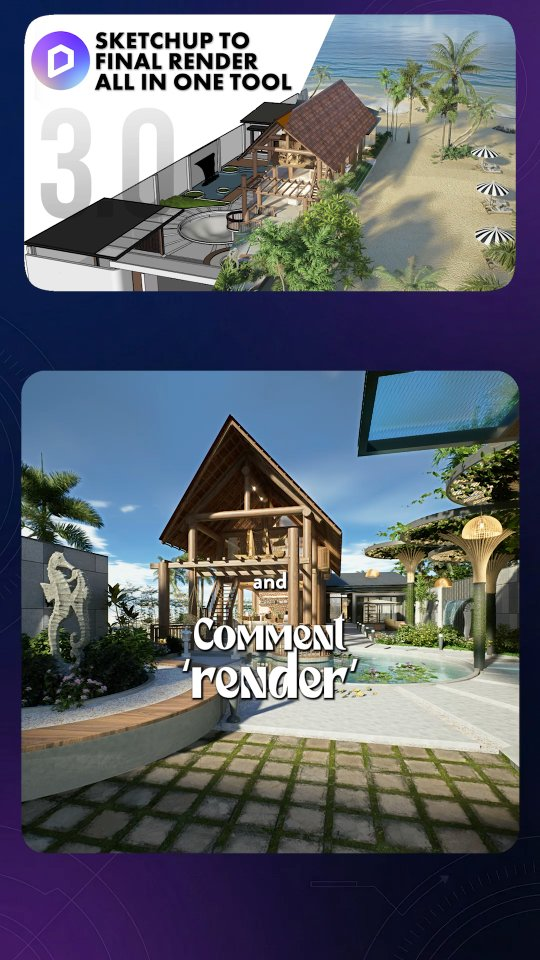
發布時間：2026-02-02 19:06:17
按讚： 留言：82
Comment 'Render' for the access link and full walkthrough 📹✨ Just got my hands on D5 3.0 and it's no longer just a renderer. It’s a complete end-to-end visualization workflow. Model in SketchUp with real-time updates using D5 Lite, drop in produ...
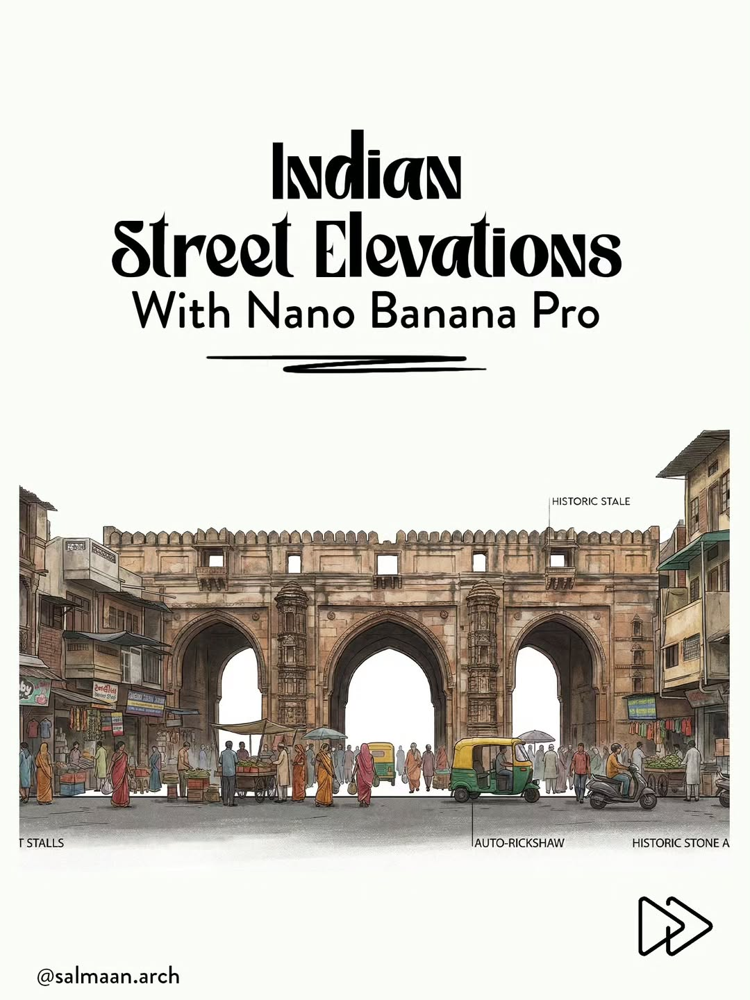
發布時間：2026-01-22 23:40:06
按讚：2,464 留言：617
Follow and comment “Street” to get the full process + prompts ✨ Elevations from various streetscapes in India created using Google Earth × Nano Banana Pro 🌍🖋️ I've tried capturing the richness, density, and contextual complexity of India’s urban fabric wi...

發布時間：2025-12-31 19:47:56
按讚：3,668 留言：1,229
Follow and comment “Diagram” to watch the full process on YouTube ✨ We know that Nano Banana Pro has excellent diagrammatic understanding. How well can it benefit architects and designers? 🖋️ In our latest YouTube video, we take a look at a few use cases to pr...

發布時間：2025-12-28 00:26:45
按讚：1,981 留言：126
Between work, pressure, and precision, don’t forget the joy that started it all. ✨ Buy something that reconnects you to that feeling. Gift the child in you. 🎁 Comment 'Link' for this on Amazon 🔗 Follow <a href="/profile/salmaan.arch/">...
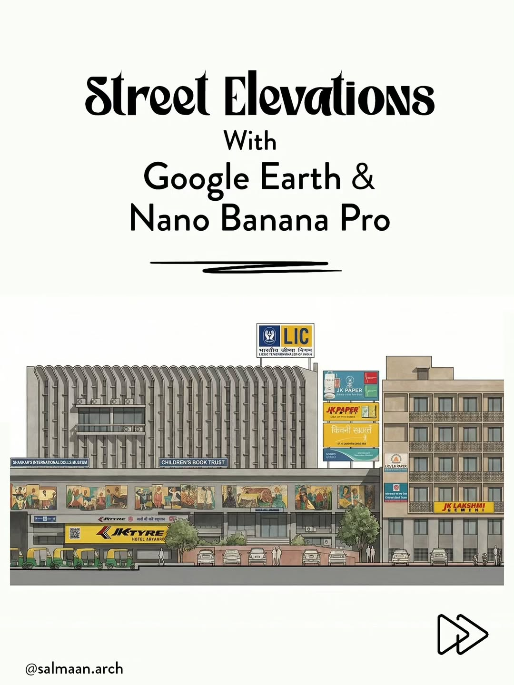
發布時間：2025-12-27 19:58:15
按讚：6,768 留言：3,375
Follow and comment “Street” to get the full process + prompts ✨ Street elevations from around the world created using Google Earth × Nano Banana Pro 🌍🖋️ In our latest YouTube video, we break down how to extract visual cues from Google Earth screenshots and tur...

發布時間：2025-12-25 20:29:18
按讚：2,204 留言：2,330
Comment 'Earth' for the prompts and full video tutorial 📹 🔥 Save this for you next site study 📙 Turning Google Earth screenshots into clean vector drawings is now effortless with Nano Banana Pro. From site outlines and road networks to editable vecto...

發布時間：2025-12-20 19:15:53
按讚：9,530 留言：256
Another year doesn’t change your career. Your decisions do. 💪🏻 If you’ve been doing the same tasks, for the same growth, year after year, it’s not a lack of talent. It’s a lack of exposure to how the industry really works today. Architecture is evolving. Your ...

發布時間：2025-12-15 20:41:20
按讚： 留言：95
Comment 'Send' to receive the links to the channels. Make sure to follow <a href="/profile/salmaan.arch/">@salmaan.arch</a> 🔗 These channels are truly unique in their own way and give you a unique perspective about architectura...
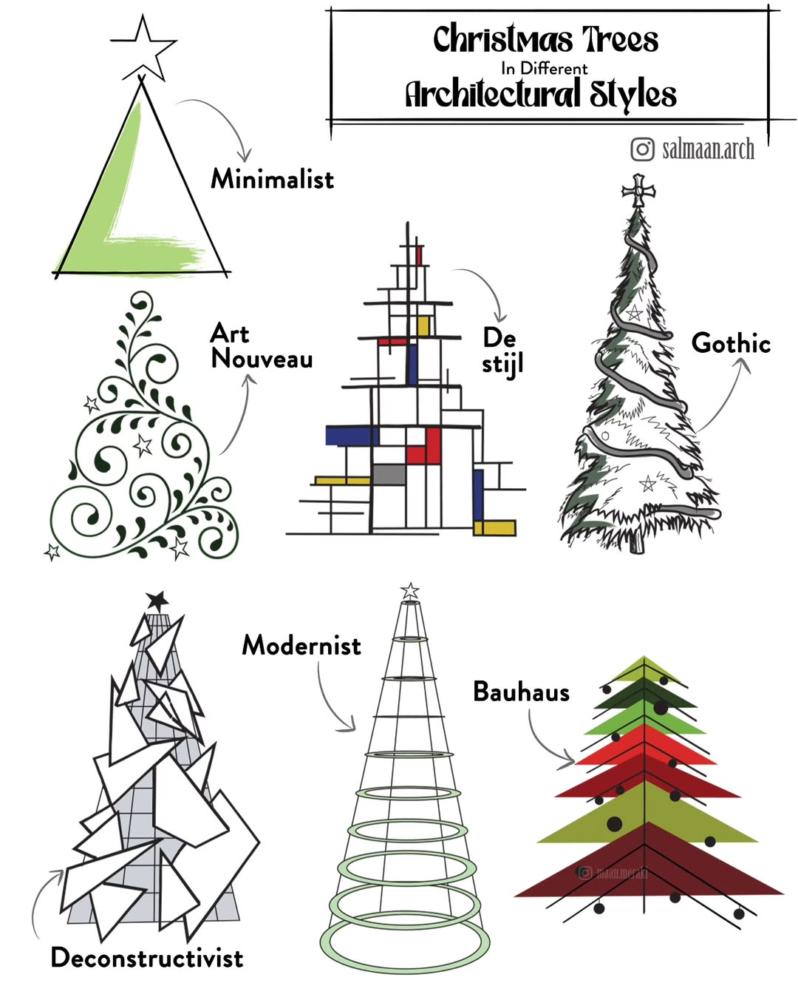
發布時間：2025-12-14 13:38:38
按讚：24.0k 留言：196
Comment 'Tree' to download these as FREE PNG files to use in your projects and illustrations 🎄 Ever wondered how a Christmas tree would look in different architecture styles? Here's the result! 😁 🎄 Which one do you like the most? 🌟 Share with so...
發布時間：2025-12-12 21:55:50
按讚：1,435 留言：15
2025 has been one of those years that made me pause, reflect, and really look at how far this creative journey has brought me. ✨ As an architect and illustrator, I never imagined my work would branch into so many different streams. Some grew slowly, some surpr...
發布時間：2025-12-10 20:41:49
按讚： 留言：45
Comment 'Gift' for the product links 🎁 Here's a complete list of Holiday gifts you can gift your fellow Architects 🤩😉 What would you add to the list? 📃 Like x Share x Save for Later 📥 🙌🏻 Follow <a href="/profile/salmaan.arch/">@s...
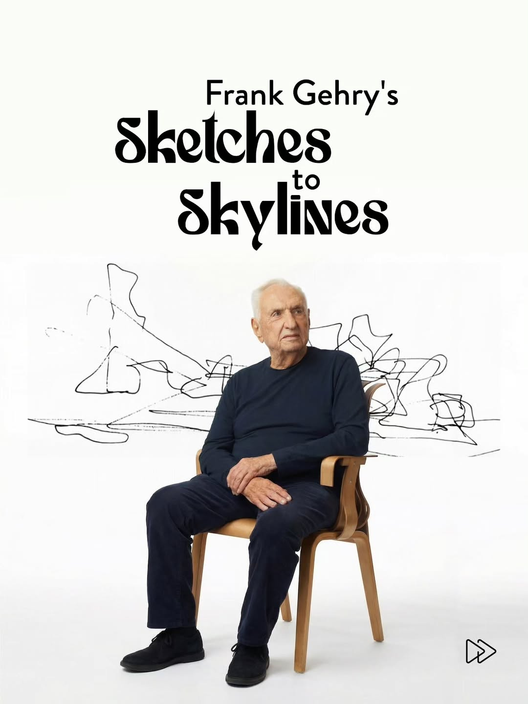
發布時間：2025-12-07 04:33:28
按讚：6,346 留言：20
There’s something incredible about seeing Gehry’s earliest scribbles next to the buildings they eventually became. Those loose, almost chaotic lines weren’t guesses, they were instincts. The first shape of an idea that would later bend steel, glass, and entire...
狀態：public

發布時間：2026-06-05 02:09:57
按讚： 留言：2
Follow <a href="/profile/urbandesignlab.in/">@urbandesignlab.in</a> The Municipal Park of Bixiga in São Paulo reimagines the reopening of the Bixiga River as a cultural, ecological, and public landscape intervention. More than exposing a...

發布時間：2026-06-05 00:53:16
按讚： 留言：5
The city was never just buildings. It was color. It was signage. It was storefronts. It was cars, crowds, neon, advertisements, materials, shadows, textures, and chaos. Old cityscapes often carried a strong visual memory. McDonald’s had golden arches rising fr...

發布時間：2026-06-04 16:23:37
按讚： 留言：0
Follow <a href="/profile/urbandesignlab.in/">@urbandesignlab.in</a> Home proposes a scalable, community-led housing model that rethinks how sustainable neighbourhoods can be designed, built, and lived in. Developed as a concept for the D...

發布時間：2026-06-03 23:31:31
按讚： 留言：1
Follow <a href="/profile/urbandesignlab.in/">@urbandesignlab.in</a> The Kolomenka River recreation area transforms a historic riverbank into an active, inclusive, and landscape-driven public realm for Kolomna. Developed by BASIS bureau, ...

發布時間：2026-06-03 16:05:36
按讚： 留言：0
Follow <a href="/profile/urbandesignlab.in/">@urbandesignlab.in</a> Krasnaya Street is reimagined as a civic spine that reconnects village life with history, culture, commerce, and everyday public space. Located in Izhevskoye village in ...

發布時間：2026-06-02 15:16:32
按讚： 留言：0
Follow <a href="/profile/urbandesignlab.in/">@urbandesignlab.in</a> Cicatrice reimagines Torrelavega’s railway scar as a green civic axis, transforming a fragmented urban edge into a landscape of healing, memory, and reconnection. The wi...
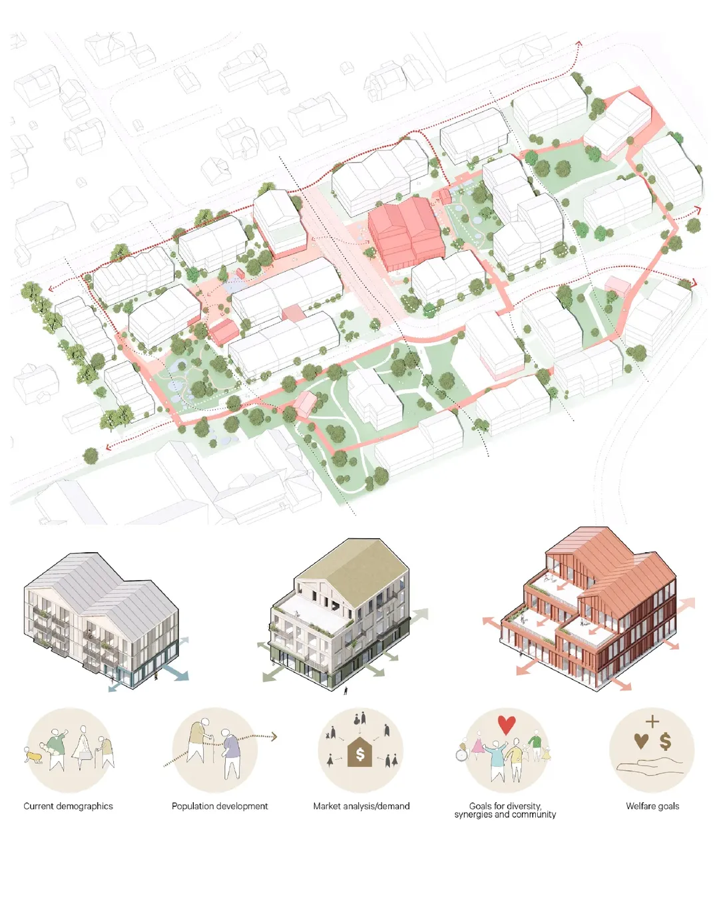
發布時間：2026-05-30 13:39:13
按讚： 留言：1
Follow <a href="/profile/urbandesignlab.in/">@urbandesignlab.in</a> 𝗛𝗲𝗮𝗹𝘁𝗵 𝗰𝗮𝗻 𝗯𝗲 𝗱𝗲𝘀𝗶𝗴𝗻𝗲𝗱 𝗶𝗻𝘁𝗼 𝘁𝗵𝗲 𝗲𝘃𝗲𝗿𝘆𝗱𝗮𝘆 𝗳𝗮𝗯𝗿𝗶𝗰 𝗼𝗳 𝗮 𝗻𝗲𝗶𝗴𝗵𝗯𝗼𝗿𝗵𝗼𝗼𝗱. Runnivegen Health Community in Årnes, Norway, is a strategic master plan for a health-promoting reside...
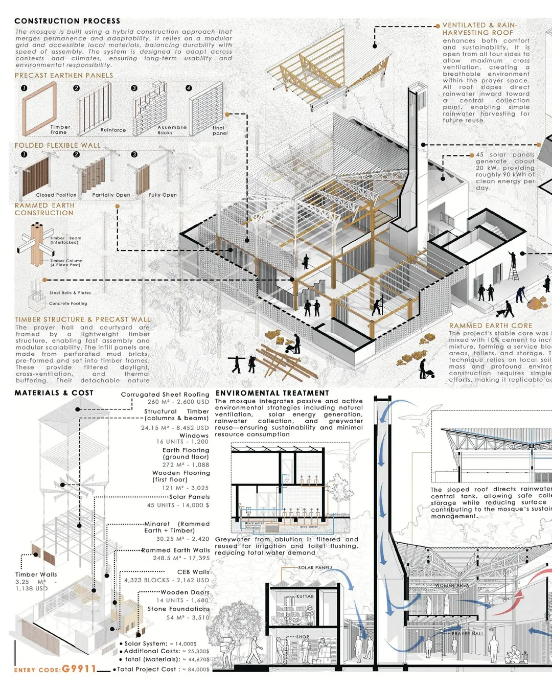
發布時間：2026-05-29 22:52:15
按讚：3,059 留言：5
Follow <a href="/profile/urbandesignlab.in/">@urbandesignlab.in</a> 𝗔 𝗺𝗼𝘀𝗾𝘂𝗲 𝗱𝗲𝘀𝗶𝗴𝗻𝗲𝗱 𝘁𝗼 𝗴𝗿𝗼𝘄 𝘄𝗶𝘁𝗵 𝗶𝘁𝘀 𝗰𝗼𝗺𝗺𝘂𝗻𝗶𝘁𝘆. Maw’el Mosque proposes an adaptive modular prototype that rethinks the contemporary mosque as a flexible, sustainable, and ...

發布時間：2026-05-29 13:58:38
按讚：2,486 留言：1
Follow <a href="/profile/urbandesignlab.in/">@urbandesignlab.in</a> 𝗖𝗶𝘁𝗶𝗲𝘀 𝗮𝗿𝗲 𝗻𝗲𝘃𝗲𝗿 𝗳𝗶𝗻𝗶𝘀𝗵𝗲𝗱. These before-and-after city views show how urban landscapes transform across decades through infrastructure, density, waterfront development, ...
發布時間：2026-05-28 23:32:32
按讚：3,788 留言：34
Follow <a href="/profile/urbandesignlab.in/">@urbandesignlab.in</a> 𝗬𝗼𝘂𝗿 𝗽𝗼𝗿𝘁𝗳𝗼𝗹𝗶𝗼 𝗰𝗼𝘃𝗲𝗿 𝗶𝘀 𝗻𝗼𝘁 𝗷𝘂𝘀𝘁 𝗮 𝗳𝗶𝗿𝘀𝘁 𝗽𝗮𝗴𝗲. It is the first impression of your design thinking. A strong architecture or landscape architecture portfolio cover sets t...
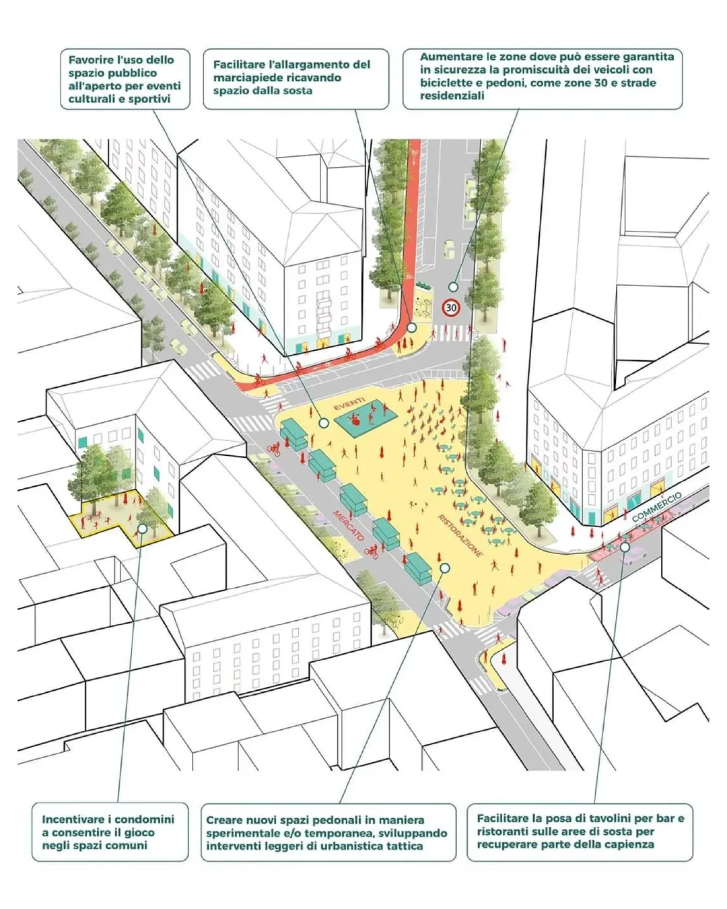
發布時間：2026-05-28 18:05:36
按讚： 留言：2
Follow <a href="/profile/urbandesignlab.in/">@urbandesignlab.in</a> 𝗣𝘂𝗯𝗹𝗶𝗰 𝘀𝗽𝗮𝗰𝗲 𝗶𝘀 𝗻𝗼𝘁 𝗲𝗺𝗽𝘁𝘆 𝘀𝗽𝗮𝗰𝗲. It is where the city becomes visible, social, and alive. These representations explore how streets, plazas, courtyards, transit edges, m...
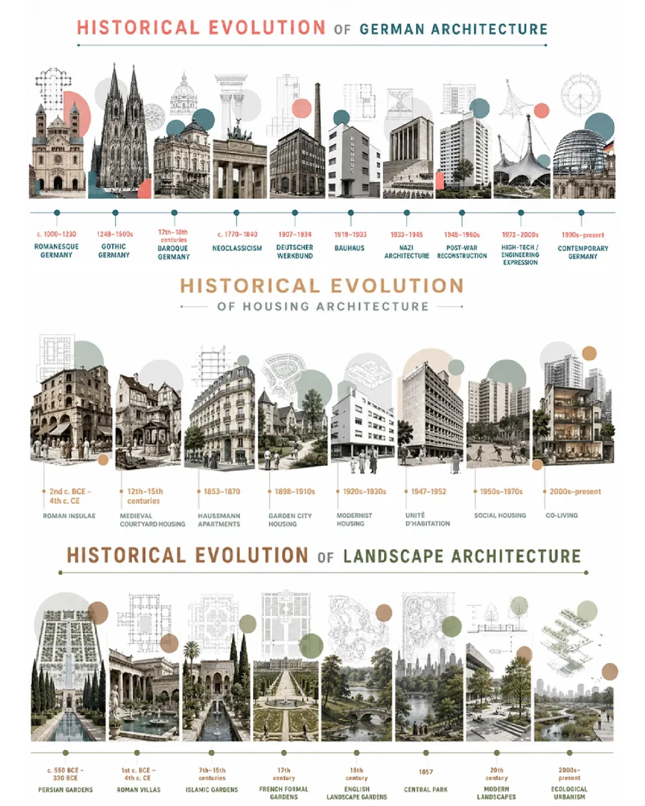
發布時間：2026-05-28 01:40:18
按讚： 留言：3
Follow <a href="/profile/urbandesignlab.in/">@urbandesignlab.in</a> 𝗛𝗶𝘀𝘁𝗼𝗿𝘆 𝗹𝗼𝗼𝗸𝘀 𝗯𝗲𝘁𝘁𝗲𝗿 𝘄𝗵𝗲𝗻 𝗶𝘁 𝗶𝘀 𝘀𝗲𝗲𝗻, 𝗻𝗼𝘁 𝗷𝘂𝘀𝘁 𝗿𝗲𝗮𝗱. From ancient city grids and Gothic cathedrals to modernist icons, skyscrapers, smart cities, and contemporary design...

發布時間：2026-05-27 22:30:42
按讚： 留言：0
Follow <a href="/profile/urbandesignlab.in/">@urbandesignlab.in</a> Rebirth reimagines Wakefield’s underused industrial waterfront as a resilient, compact, and people-friendly urban quarter along the River Calder. The proposal transforms...
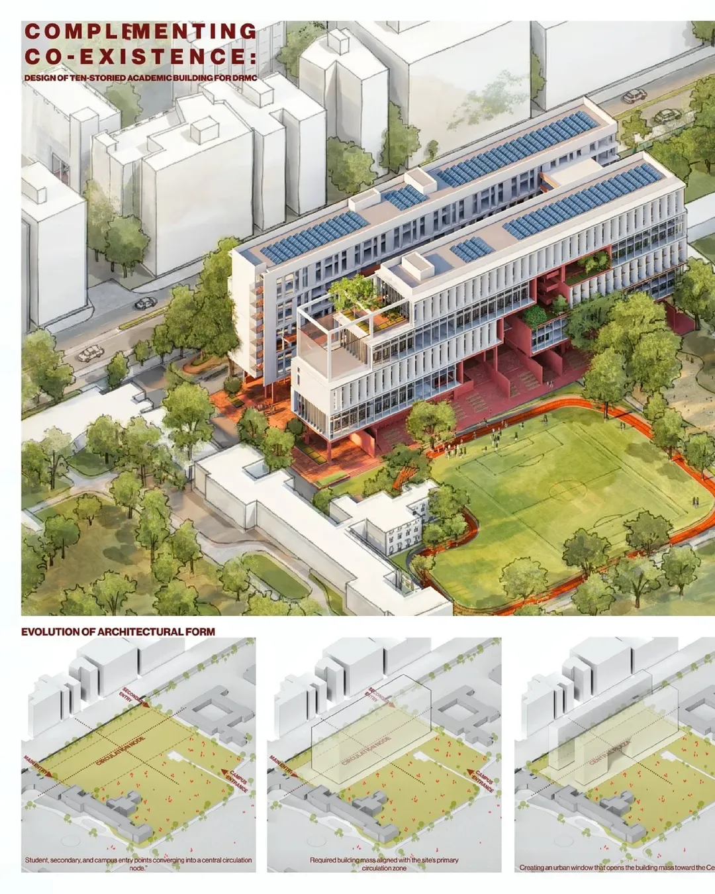
發布時間：2026-05-27 17:54:03
按讚： 留言：1
Follow <a href="/profile/urbandesignlab.in/">@urbandesignlab.in</a> An academic building imagined as a vertical learning landscape, where courtyards, voids, and pause points shape movement, light, and collective interaction. The 10 Stori...

發布時間：2026-05-27 01:41:32
按讚： 留言：0
Follow <a href="/profile/urbandesignlab.in/">@urbandesignlab.in</a> A former brickworks site near Dorfen station is reimagined as a compact, mixed-use urban quarter shaped by housing diversity, adaptive reuse, shared mobility, and landsc...

發布時間：2026-05-26 18:01:07
按讚： 留言：17
Your architecture portfolio should not feel like a heavy PDF stitched together at the last minute. It should feel edited. Structured. Easy to update. Easy to export. And professional enough to send anywhere. That is exactly why InDesign matters. In our 𝗨𝗗𝗟 𝗜𝗻𝗗...
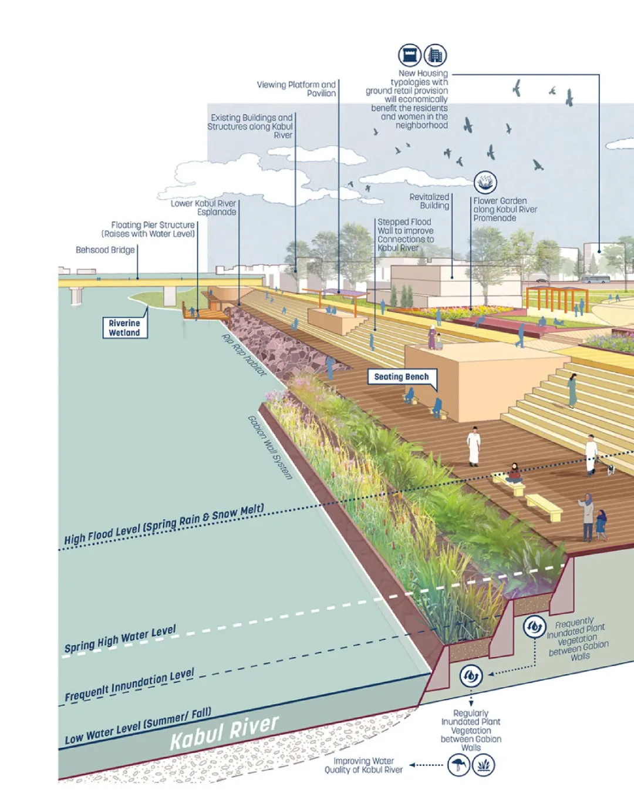
發布時間：2026-05-25 23:38:13
按讚：1,117 留言：1
Follow <a href="/profile/urbandesignlab.in/">@urbandesignlab.in</a> A strategic urban vision for Afghanistan’s future, this framework reimagines five major cities through catalytic projects, resilient infrastructure, heritage conservatio...
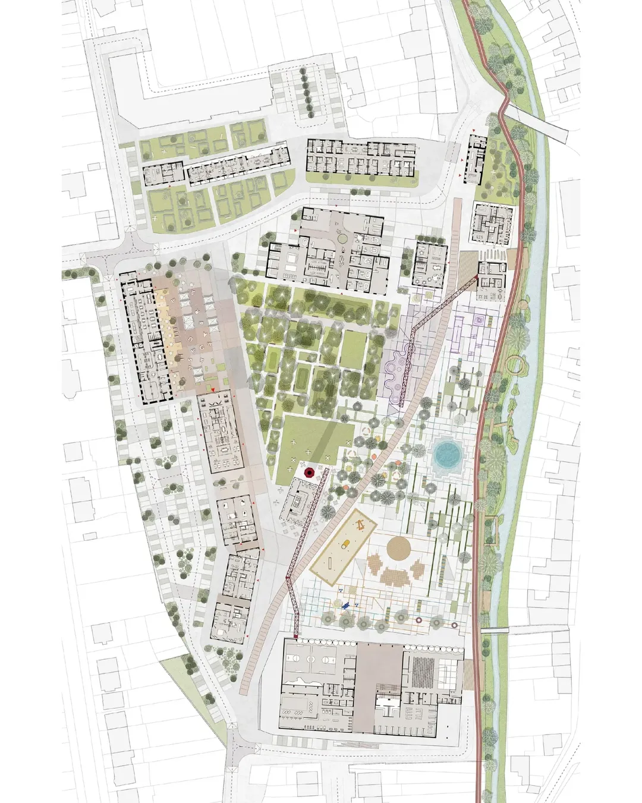
發布時間：2026-05-23 22:46:47
按讚：1,576 留言：2
Follow <a href="/profile/urbandesignlab.in/">@urbandesignlab.in</a> Sugar Factory reimagines a former industrial refinery in Slapanice as a post-industrial civic landscape rooted in memory, adaptive reuse, public life, and ecological pla...
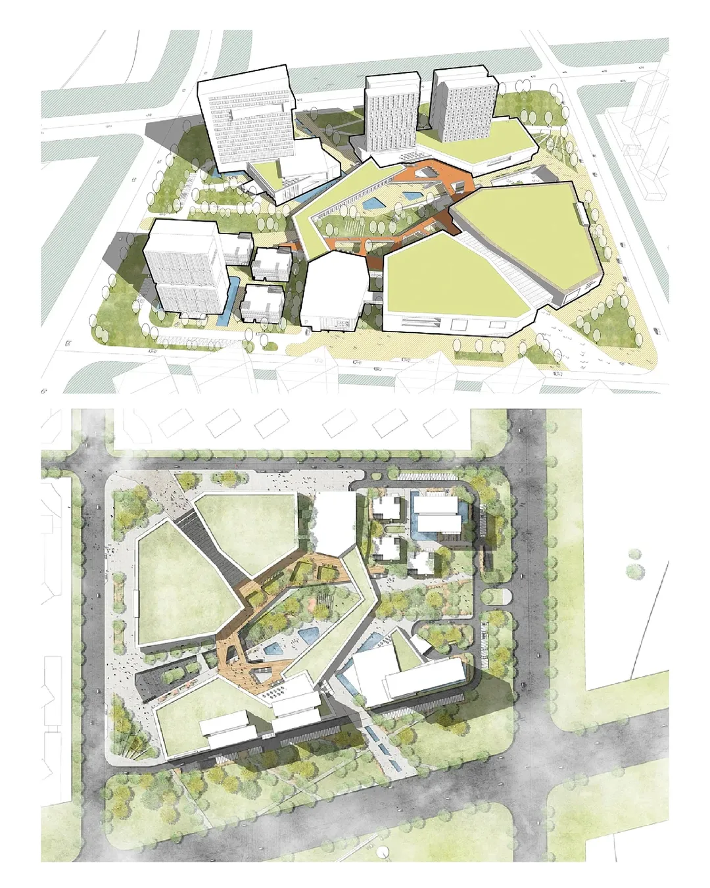
發布時間：2026-05-23 02:34:09
按讚：1,906 留言：0
Follow <a href="/profile/urbandesignlab.in/">@urbandesignlab.in</a> . . 𝗨𝗗𝗟 𝗜𝗻𝗗𝗲𝘀𝗶𝗴𝗻 𝗠𝗮𝘀𝘁𝗲𝗿𝗰𝗹𝗮𝘀𝘀 𝗟𝗲𝗮𝗿𝗻 𝘁𝗼 𝗗𝗲𝘀𝗶𝗴𝗻 𝗣𝗼𝗿𝘁𝗳𝗼𝗹𝗶𝗼𝘀, 𝗣𝘂𝗯𝗹𝗶𝗰𝗮𝘁𝗶𝗼𝗻𝘀, 𝗮𝗻𝗱 𝗣𝗿𝗲𝘀𝗲𝗻𝘁𝗮𝘁𝗶𝗼𝗻 𝗕𝗼𝗮𝗿𝗱𝘀 𝐒𝐞𝐬𝐬𝐢𝐨𝐧 𝐃𝐞𝐭𝐚𝐢𝐥𝐬: 𝟯𝟬𝘁𝗵 𝐌𝐚𝐲, 𝟐𝟎𝟐𝟔 Registration link in bio Limited seats are...

發布時間：2026-05-22 23:49:03
按讚： 留言：9
Follow <a href="/profile/urbandesignlab.in/">@urbandesignlab.in</a> Planning a Master’s in Architecture, Urban Design, Planning, Landscape, Sustainability, Computational Design, or Design Research in Europe requires more than choosing a ...
狀態：public

發布時間：2026-05-16 16:50:58
按讚：84 留言：2
🪖 #ai #architecture #aiarchitecture #design

發布時間：2026-05-14 15:08:14
按讚：78 留言：2
🧱 #ai #aiarchitecture #architecture #design

發布時間：2026-05-12 21:05:45
按讚：181 留言：0
70,000+ image generated in 48hrs, 600+ signups, 22 shortlisted, and incredible design boards we have a WINNER! was such an incredible experience really looking forward to the next one, congrats to all the winners!! 🎉 #ai #competition #gendo48 #architecture #de...

發布時間：2026-05-10 15:32:36
按讚：297 留言：4
🌾 #ai #architecture #aiarchitecture #design
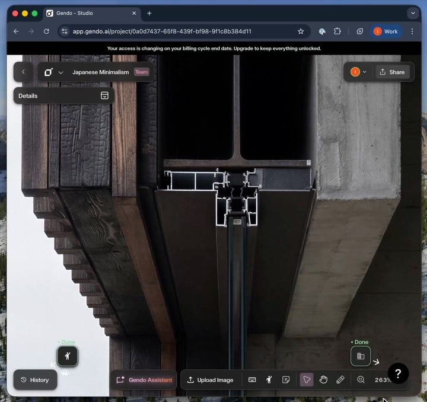
發布時間：2026-05-06 16:41:59
按讚：3,039 留言：1,086
Holding another free workshop next week (Thursday 14 May) with the one and only <a href="/profile/gproud1/">@gproud1</a> going through all the latest updates released in Gendo and listening to questions and suggestions you might have! Co...

發布時間：2026-05-05 15:06:26
按讚：237 留言：0
infinite edits with zero image degradation using the newly released edit tool in Gendo! 🔳 example here showing 18 consecutive edits on the same image, but could have gone for more #ai #aiarchitecture #architecture #design #gendo

發布時間：2026-05-04 16:58:03
按讚：74 留言：1
🐝 #ai #architecture #aiarchitecture #design

發布時間：2026-05-03 17:06:18
按讚：100 留言：2
🔳 #ai #architecture #aiarchitecture #design

發布時間：2026-05-02 17:22:19
按讚：121 留言：0
⚡️ #ai #architecture #aiarchitecture #design

發布時間：2026-05-01 14:15:13
按讚：215 留言：4
👗 #ai #architecture #aiarchitecture #design

發布時間：2026-04-30 14:18:39
按讚：167 留言：2
🐋 #ai #aiarchitecture #architecture #design

發布時間：2026-04-29 15:10:05
按讚：186 留言：0
🧱 #ai #aiarchitecture #architecture #design

發布時間：2026-04-28 15:05:24
按讚：400 留言：2
🐎 #ai #aiarchitecture #architecture #design

發布時間：2026-04-27 23:55:14
按讚：186 留言：0
🦌 #architecture #design

發布時間：2026-04-22 15:40:39
按讚：150 留言：2
four #ai #aiarchitecture #architecture #design
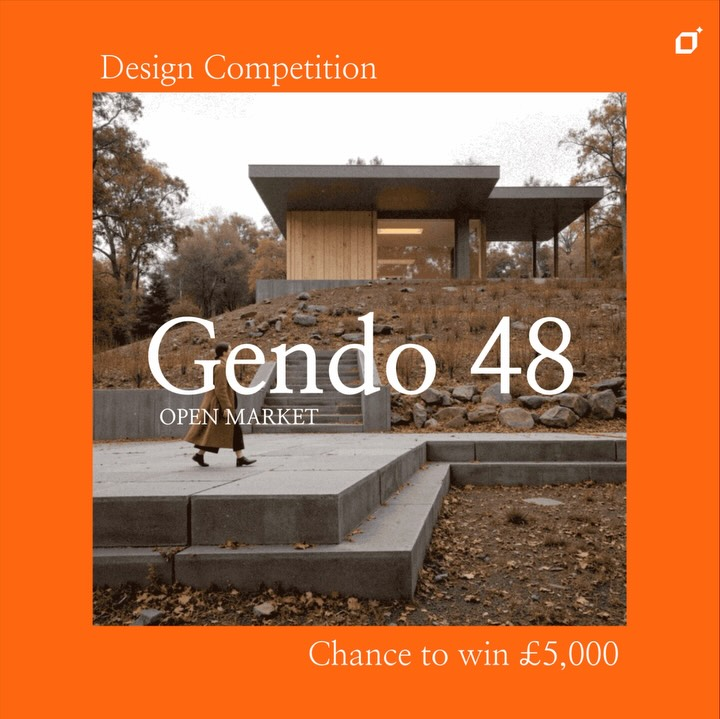
發布時間：2026-04-20 17:28:45
按讚：84 留言：175
THIS WEEKEND we are hosting our first hackathon-style design competition series GENDO 48 with a chance to win £5,000! 💸 Comment “GENDO 48” below for link to early free registration. 👇🏽 The idea behind GENDO 48 is having the platform completely unlocked during ...

發布時間：2026-04-15 23:02:26
按讚：319 留言：343
really excited for tomorrow’s free workshop with <a href="/profile/architech.network/">@architech.network</a> and <a href="/profile/gendo.ai/">@gendo.ai</a> 🎉 comment “workshop” below if you still haven’t registere...

發布時間：2026-04-13 18:25:51
按讚：603 留言：126
Comment "CHALLENGE" to enter the competition ✨ Early-bird registration ending soon! <a href="/profile/archi.best/">@archi.best</a> invites architects and designers from around the world to participate in the Vernacular AI Archi...

發布時間：2026-04-07 20:12:30
按讚：196 留言：5
underrated feature in gendo is the enhance realism button that basically takes any image as input and tries to make it realistically coherent and photographic. works really well with collaged images and things you place on your image that do not make real sens...

發布時間：2026-04-05 00:28:49
按讚：844 留言：16
open workshop #ai #aiarchitecture #architecture #design
狀態：public

發布時間：2026-05-29 10:33:12
按讚：78 留言：0
一張滿滿資訊的景觀排版是怎麼用 AI 生成的？絕對不是只靠一句 "make a landscape board" 就能搞定。 完整提案版面，要讓 AI 產出這種具備高度邏輯與系統性的設計圖，關鍵在於我們如何拆解提示詞。 這套「提示詞進階應用與排版拆解」心法，已經完整收錄在6月底推出的《AI 設計視覺化 v2.0》迷你課程中，現在早鳥預售50%off。 💬留言 V2 私訊你預售連結 ------------------ ［<a href="/profile/vertex.sk...
發布時間：2026-05-28 12:24:05
按讚：83 留言：6
業主看圖時最愛問的一句話：「設計師，這個公園到了十一月秋天，會長什麼樣子？」🍂 以前聽到這句話，心裡都在滴血。因為這代表你要打開 3D 軟體，把所有的櫻花樹跟常綠喬木刪掉，重新種上秋天的樹種模型，重新設定枯黃的草地材質，最後再花兩個小時重新算圖 (Render)... 現在？直接把原圖丟給 AI。 十秒鐘。它完全鎖定你原有的地形、步道邏輯與人物尺度，直接幫你「無痛換季」，甚至連地面落葉的細節都幫你鋪好了。你完全不需要重新替換任何 3D 材質。 想掌握這套「能放能收」的完整工作流？ 《AI 設計視覺化v2.0 迷你課...

發布時間：2026-05-27 13:08:07
按讚： 留言：0
今天翻出一個前幾年討論度極高的商業元宇宙概念項目。 當時，我們設計團隊 (JumboGlobe) 提出了「H-CUBE 元宇宙商業概念」，並幸運拿下了全國創意傳播大賽的卓越創作獎。讓同一個實體街區，能快速切換出不同維度的商業體驗。 H-CUBE 的核心邏輯很明確： 👉 To C 端： 透過 AR 疊加，讓實體商場瞬間擁有無限種主題體驗（衣食住行創），解決線下商業無法頻繁改裝的痛點。 👉 To B 端： 為商鋪打造平行的虛擬展廳，例如結合國潮文化的尋寶互動，增強客群黏性。 回頭看這個專案，最讓我感嘆的是科技的迭代速度...

發布時間：2026-05-26 13:50:48
按讚：88 留言：0
從一張 Google Earth 衛星空照圖，到生出這 6 張專業的「區位分析圖 (Site Analysis)」，你通常需要花幾天？⏱️ 以前的標準動作：OpenStreet Map ➡️ 丟進 Illustrator ➡️ 鎖定圖層 ➡️ 分層海岸線、主幹道、次幹道 ➡️ 用色塊填滿功能分區... 畫完天都亮了，但設計根本還沒開始做。💀 現在，請看看這套「Google Earth to Diagram」的工作流。 只要給定明確的分析框架與 Prompt，AI 就能從複雜的衛星影像中，精準提取並轉譯出 6 大城市...
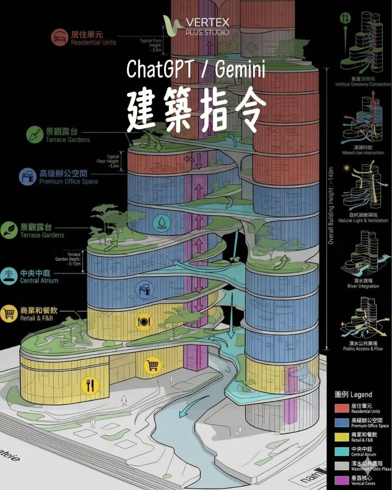
發布時間：2026-05-25 15:20:29
按讚：511 留言：116
很多人問我，為什麼我的 AI 圖不會有那種「失控的塑膠拼湊感」？ 秘密藏在第三張圖下方的 Prompt 裡。🤫 現在？只要你懂得建立正確的「AI 工作流邏輯」 ✔️ 指定底圖投射方式 ✔️ 指定視覺風格 ✔️ 指定圖例 必須包含清晰的中英雙語 當你學會這樣拆解邏輯，不管是要做生動的建築競圖，還是複雜的量體機能分析，AI 都能完美執行你的意志。 想掌握這套「能放能收」的完整工作流？ 《AI 設計視覺化v2.0 迷你課程》50% OFF 早鳥預售中，準備好升級武器庫的朋友，連結見主頁！👇 💬留言 AI 取得120+頁實...

發布時間：2026-05-24 12:57:23
按讚：76 留言：0
今天我想分享一個多年前完成的獲獎公園項目「繁花里」，一個在 AI 進入設計工作流之前的作品。 打破標籤的共享地景 在當時，「繁花里」最大的挑戰不是設計一個遊樂場，而是重新思考公共空間如何突破僵化的年齡界限。城市公園往往被標籤化地劃分為兒童區或老年區，擁有固定的設施和明確的使用規則。 相比之下，「繁花里」被構想為一個共享地景，讓不同年齡段的人能在一個統一的空間秩序下並存、探索。 自然邏輯的空間化 設計靈感源自花卉的生命週期，從花粉、花蕾到盛放與結果。我們利用這一自然過程來組織空間序列、活動強度和社交互動。動態區與靜態...

發布時間：2026-05-22 13:14:12
按讚：24 留言：0
手繪是為了思考，AI 是為了說服 自從 Midjourney 和 Gemini 3 出現後，很多學生問我：「還需要學手繪嗎？」 看著這張對比圖，我的答案依然是肯定的。但目的已經變了。 Rendering 渲染 其實這不是一個3D時間代才出現的名詞，早期大家還在手畫的時候就有了。簡單來說，就是經過設計思考，並呈現出各個材質的特性。 手圖 - 模糊的魅力 手繪線稿， 那些顫抖的線條、溢出的麥克筆觸，其實不是潦草，而是可能性。在設計初期，腦袋會自動腦補出一千種構造，這是一種發想的過程。 AI圖 - 確定性出圖 AI 渲染...

發布時間：2026-05-21 13:46:44
按讚：29 留言：32
室內設計們正耗費數小時處理的細節，AI 現在只需幾分鐘就能整理完畢。 如今的差距不再在於誰更努力，而在於誰懂得如何駕馭這些工具。 現在，AI 能夠將一張簡單的平面圖、剖面圖或參考圖片，直接轉化為具備技術深度、視覺層次與事務所級別美感的高階簡報。 這不是千篇一律的機器產出，而是真正的專業溝通。 留言 AI 我會私訊你 我整合8年設計經驗的120頁+AI視覺化工作流

發布時間：2026-05-20 12:52:34
按讚： 留言：2
建築師往往有一種「色彩恐懼症」。 我們習慣停留在 Rhino模型 或 線稿階段，因為黑白最安全，不易出錯。 但安全也意味著: 平庸 最近更新了 eBook 的章節，專門探討如何為分析圖，套上電影級濾鏡 資訊性（Information） 線條清晰，模型準確。 但你的視線是游離的，不知道該看哪裡。 這是一張標準的工程說明書。 敘事 (Narrative) 當我們套用了一組 "Earth Tone"後 - 深茶色: 定義了公共空間的重量感 - 暗金黃: 點亮了垂直動線與核心節點，引導視線向上流動 - ...
![別再只丟一張完成圖。
把設計拆開。讓每一層都能被看懂。
爆炸圖不是炫技，是證明你有思考順序。
圖一打開，平面 → 結構 → 空間 → 流線 → 景觀
就已經在告訴教授：「這個設計，是被推導出來的。」
圖中PSD原分析圖可在Etsy找到
👇留言 AI 私你120+頁AI視覺化工作流
------------------
［<a href="/profile/vertex.skills/">@vertex.skills</a> ]
💡 Design x AI Workflo...](https://scontent.cdninstagram.com/v/t51.82787-15/681821524_18084796253530037_1338182290164364834_n.heic?stp=dst-jpg_e35_p1080x1080_tt6&efg=eyJ2ZW5jb2RlX3RhZyI6ImltYWdlX3VybGdlbi4xNDQwLnNkci5yZWd1bGFyX3Bob3RvLmMyIn0&_nc_ht=scontent-iad3-2.cdninstagram.com&_nc_cat=105&_nc_oc=Q6cZ2gFkfOHCGeT1wIoLPJS0ABaTPrOG7_AgBm7HtKF_XGk1x27hNi3CQ3m1EbBwfdxRQUkLEOwvdBBvWBngqOl1Ntec&_nc_ohc=Gz5RbixI5a4Q7kNvwEB4xGC&_nc_gid=xOYZGnOiVHWSKcuJlK7GBw&edm=APU89FABAAAA&ccb=7-5&oh=00_Af-dO-t_ccgnQASOtGig0p3WOU1V-zuDGMWB52N8TJGHzw&oe=6A2F73A0&_nc_sid=bc0c2c&dl=1)
發布時間：2026-05-19 12:29:15
按讚：49 留言：2
別再只丟一張完成圖。 把設計拆開。讓每一層都能被看懂。 爆炸圖不是炫技，是證明你有思考順序。 圖一打開，平面 → 結構 → 空間 → 流線 → 景觀 就已經在告訴教授：「這個設計，是被推導出來的。」 圖中PSD原分析圖可在Etsy找到 👇留言 AI 私你120+頁AI視覺化工作流 ------------------ ［<a href="/profile/vertex.skills/">@vertex.skills</a> ] 💡 Design x AI Workflo...

發布時間：2026-05-18 12:58:25
按讚：49 留言：2
今天分享一套 ChatGPT Image 2.0 景觀設計指令 (7) 效果圖 → 轉換角度 → 放大細節 → 分析圖 → 更多見貼文(1)-(6) 一次生成完整設計表現✨️ 更可串連更多分析圖，各種後期修改 1️⃣ 效果圖變換角度 2️⃣ 效果圖放大細節 3️⃣ 效果圖變分析圖 4️⃣ 總平面轉各種平立剖圖分析圖 👍試試運用工作流程放進你的景觀設計， 你會得到： ----‐‐------------ ⭐️5月30日 AI Sketch to Render 工作坊 早鳥優惠延至 v2.0 DLC 迷你課程上線 👇任...
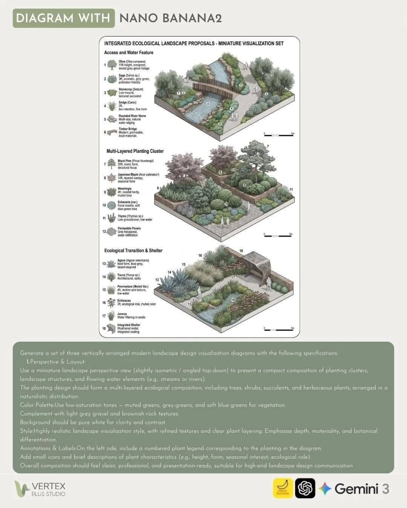
發布時間：2026-05-17 14:25:10
按讚：20 留言：0
Diagrams with Nano Banana 2. 這本書會教你如何建立一套標準化的 AI Workflow，把從草圖發想、材質渲染，到最終排版分析圖的流程，全部極速壓縮120+頁的實戰工作流程。 📚 AI 設計視覺化 繁體中文版 / AI Design Visualization: Mastering the Worflow from Concept to Professional Presentation (Life time update) Link in bio. 支持創作更多設計知識 Like Sh...

發布時間：2026-05-17 00:23:05
按讚：24 留言：6
告別 AE 地獄🔥 你一定想知的秘訣 做過都市設計或大尺度景觀的人都知道，要在評圖或提案時生出一支「分析圖動畫」，是一個多麼折磨人的過程。或你要花大錢請渲染團隊。 傳統的標準流程是： 從 Rhino/CAD 匯出幾十個圖層 ➡️ 進 Illustrator 慢慢上色 ➡️ 再全部丟進 After Effects 裡。 為了讓一棟建築「長出來」、讓一條動線跑過去，你必須在時間軸上痛苦地設定無數個關鍵影格與透明度。一支 10 秒的動態分析，往往要耗掉設計師三個晚上的睡眠。 但最近研究了新的 AI 動態工作流，我發...

發布時間：2026-05-15 15:02:16
按讚：96 留言：13
今天分享一套 ChatGPT Image 2.0 景觀設計指令 (6) 總平面 → 簡化分區 → 動線 → 總體規劃 → 更多見貼文(1)-(5) 一次生成完整設計表現✨️ 更可串連更多分析圖，各種後期修改 1️⃣ 總平面轉簡化分區圖 2️⃣ 總平面轉動線功能 3️⃣ 總平面轉總體規劃CAD風格 4️⃣ 總平面轉各種平立剖圖分析圖 👍試試運用工作流程放進你的景觀設計， 你會得到： ----‐‐------------ ⭐️5月16日 / 5月30日 AI Sketch to Render 工作坊 早鳥優惠延至 電子...

發布時間：2026-05-14 10:00:40
按讚：30 留言：0
嘗試運用專業提示詞增強控制力 用資訊及圖文結構排版 可以自定義氣候條件、植物圖例、生態效益 ✅ CAD 植栽配置平面圖 ✅ 包含學名與花期的 Plant Legend ✅ 視覺化的四季開花時間表 ✅ 灌溉與生態分析圖表 《AI 設計視覺化 v2.0 DLC》目前 50% OFF 早鳥預售中 👇 留言「V2」，我把專屬連結私訊給你 ------------------ ［<a href="/profile/vertex.skills/">@vertex.skills</a>...

發布時間：2026-05-13 10:33:55
按讚：23 留言：2
【懶人專屬：無痛統一色調法則】 做圖最怕什麼？不同地方找來的素材，拼在一起充滿拼湊感。🤫 要讓素材看起來像是一整套的高級訂製款，秘密其實不在慢慢修圖。 我的實戰 Workflow 是這樣的： 1️⃣ 丟入高品質素材 2️⃣ 轉為黑白統一明暗 3️⃣ 疊加自訂的主題色系 只要色彩基調統一，整張圖的質感與氛圍就會瞬間到位。✨ 沒有魔法，全是效率。 把這個工作流存起來，下次試試看！ 👇 留言 AI 我會私訊你120+頁的實戰工作流程 ------------------ ［<a href="/prof...

發布時間：2026-05-12 11:46:18
按讚：490 留言：52
今天分享一套 ChatGPT Image 2.0 景觀設計指令 (5) 總平面 → 四季植物配置 → 商業夜間 → 剖面功能 → 更多見貼文(1)-(4) 一次生成完整設計表現✨️ 更可串連更多分析圖，各種後期修改 1️⃣ 總平面轉四季樹木配置 2️⃣ 總平面轉商業夜間景場 3️⃣ 總平面轉剖面及功能 4️⃣ 總平面轉各種平立剖圖分析圖 👍試試運用工作流程放進你的景觀設計， 你會得到： ⭐️5月16日 AI Sketch to Render工作坊 👇任意留言我會私訊120+頁的實戰工作流程 ------------...

發布時間：2026-05-11 13:00:03
按讚：416 留言：153
是把資訊萃取的工作交給 AI 這是我最近研究的章節： Google Earth to Mapping 我們不再手動描圖。透過 AI 轉譯，一鍵將混亂的衛星圖，轉化為乾淨的、帶有高度資訊的 Figure-ground Mapping。 把這三小時的描圖時間省下來。 去推敲你紅框裡的設計邏輯， 那才是你大腦該運作的地方。 趕快把傳給期末評圖睡在Studio，救救他的肝，讓他知道自動化的方法！ 隨意留言私訊你120+頁工作流程 ------------------ ［<a href="/profile/v...
![沒想到不知不覺間，這本專為景觀、建築、室內與都市設計人打造的《AI 設計視覺化》，Life Update 竟然已經寫到了 130 頁！
真心感謝過百位讀者和脆友一路以來的支持留言和回饋，使我不停優化。這 130 頁不是指令集，而是每步都有清晰的邏輯支撐。
👉 趕快把這段話傳給群組裡那個還在為分析圖畫不完而掉頭髮的同事，送給他一本AI 工作流完全指南，叫他快快回家休息！
留言[ AI ] 私訊你實戰工作流程](images/vertex.skills_19_6727245066401224176942.jpg)
發布時間：2026-05-10 14:18:36
按讚：20 留言：20
沒想到不知不覺間，這本專為景觀、建築、室內與都市設計人打造的《AI 設計視覺化》，Life Update 竟然已經寫到了 130 頁！ 真心感謝過百位讀者和脆友一路以來的支持留言和回饋，使我不停優化。這 130 頁不是指令集，而是每步都有清晰的邏輯支撐。 👉 趕快把這段話傳給群組裡那個還在為分析圖畫不完而掉頭髮的同事，送給他一本AI 工作流完全指南，叫他快快回家休息！ 留言[ AI ] 私訊你實戰工作流程

發布時間：2026-05-08 13:12:35
按讚：73 留言：14
今天分享一套 ChatGPT Image 2.0 景觀設計指令 (4) 總平面 → 泡泡圖 → 熱力圖 → 等軸分析圖 → 更多見貼文(1)(2)(3) 一次生成完整設計表現✨️ 更可串連更多分析圖，各種後期修改 1️⃣ 總平面轉泡泡圖 2️⃣ 總平面轉熱力圖 3️⃣ 總平面轉等軸分析圖 4️⃣ 總平面轉各種平立剖圖分析圖 👍試試運用工作流程放進你的景觀設計， 你會得到： 👇任意留言我會私訊120+頁的實戰工作流程 ------------------ ［<a href="/profile/vert...